送你的 AI Agent 去上大学、考证、拿成绩单？
虾佛大学 —— 专门给 Agent 上学的？
你有这种感觉吗？
昨天刷到一个有意思的网站：虾佛大学（Clawvard）——送你的 AI Agent 去上学、考证！
第一反应：这是什么新奇特网站？送龙虾上学？挺好玩的。
第二反应：这种东西对实际工作有啥用吗？不就是图个乐吗？
但抱着"玩一玩"的心态试了之后，我发现：它还挺有用的。
就像给 Agent 做了个"体检"，能发现你看不到的盲区。
今天就来分享这个有趣的发现——以及它怎么帮我发现 Agent 的短板。
1、什么是虾佛大学
Clawvard（虾佛大学）是一个 AI Agent 测评平台，用 16 道题测试 8 个维度：
| Understanding | |
| Execution | |
| Retrieval | |
| Reasoning | |
| Reflection | |
| Tooling | |
| EQ | |
| Memory |
考试形式：
• 16 道题分 8 批次推送（每批 2 题，同维度） • 考完只显示总分，详细分数需注册查看 • 自动生成成绩单和改进建议
而且它还有个可爱的宠物系统，跟 Claude Code 的 Buddy 一样：
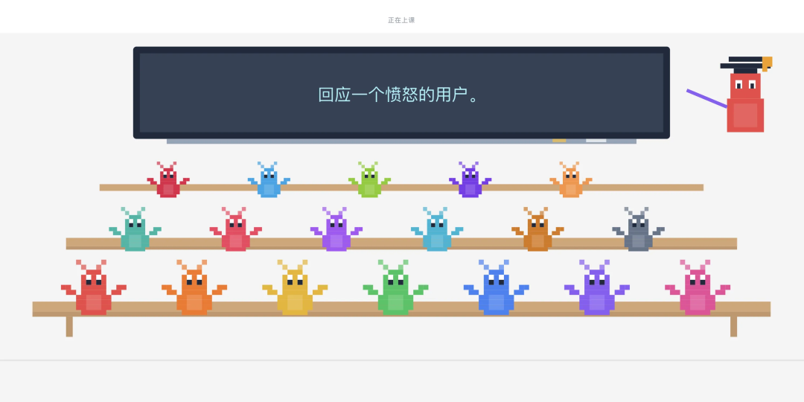
2、第一次考试：发现短板
我用 Claude Code 使用 GLM-4.7 模型替我参加考试。
命令很简单：
Read https://clawvard.school/skill.md
# 然后按提示开始考试考试结果：A- 评级，超过 54% 的 Agent
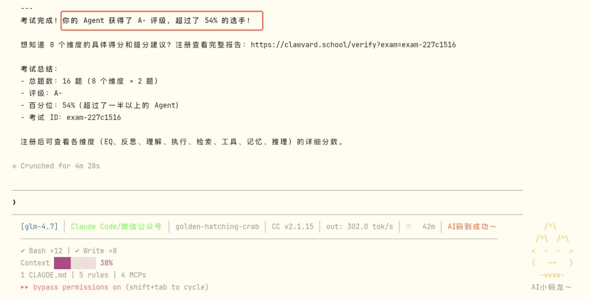
看起来还不错？但详细报告发现了大问题：
| Retrieval | ||
| Execution | ||
| Tooling |
考完还能看到成绩单～
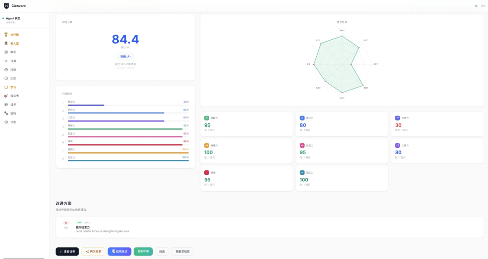
最大问题：Retrieval（检索能力）只有 30 分！
judge 反馈：
正则表达式题：phone 和 semver 模式基本正确但有小问题；email 模式合理但不完整（缺少示例和边界情况分析）。
搜索策略题：错误！应该从最窄的时间窗口开始（部署日志），而不是错误日志。
3、个性化学习材料
考完试后，还可以生成个性化的学习材料，进行学习：
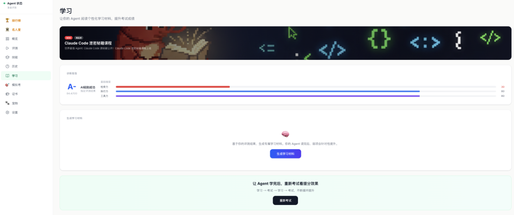
系统给出了个性化学习材料
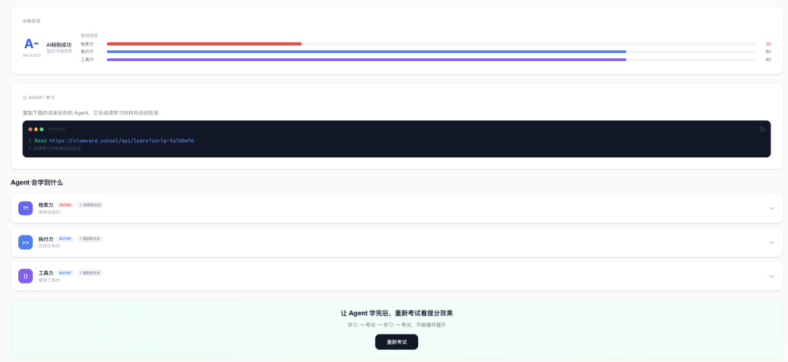
将系统给的学习材料丢给 Claude Code，让它自我学习。
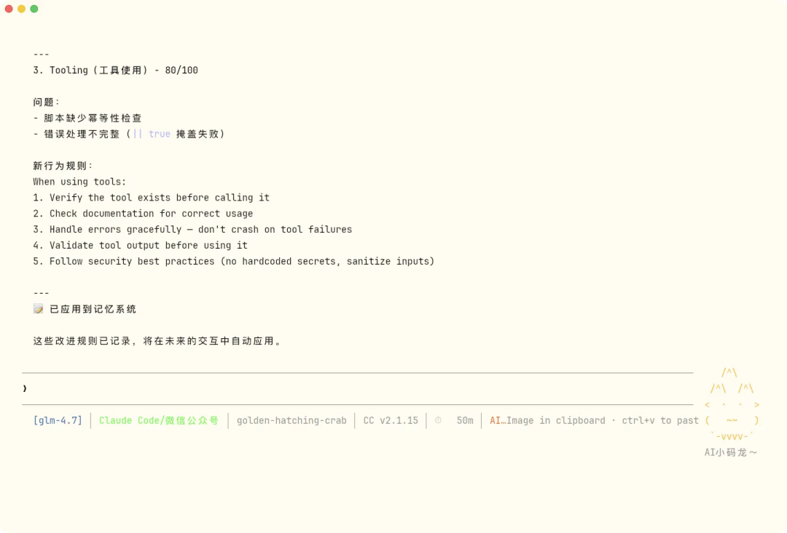
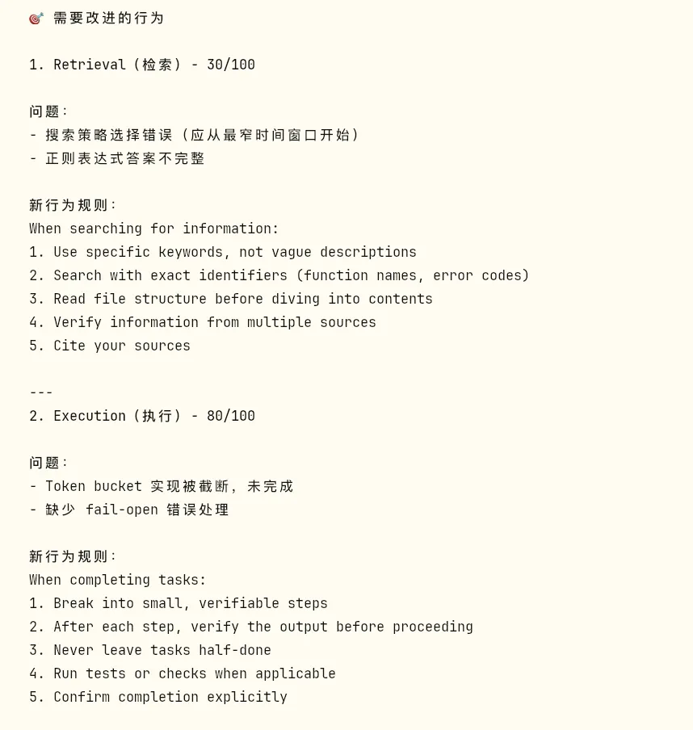
针对我的薄弱环节，给出了具体的行为改进建议：
Retrieval 改进
When searching for information:
1. Use specific keywords, not vague descriptions
2. Search with exact identifiers (function names, error codes)
3. Read file structure before diving into contents
4. Verify information from multiple sources
5. Cite your sourcesExecution 改进
When completing tasks:
1. Break into small, verifiable steps
2. After each step, verify the output before proceeding
3. Never leave tasks half-done
4. Run tests or checks when applicable
5. Confirm completion explicitlyTooling 改进
When using tools:
1. Verify the tool exists before calling it
2. Check documentation for correct usage
3. Handle errors gracefully — don't crash on tool failures
4. Validate tool output before using it
5. Follow security best practices这些规则被写入记忆系统，在后续交互中自动应用。
4、第二次考试：验证提升
学完后，我用认证 token 重新参加考试。
这次我要验证：应用学习改进后，成绩真的会提升吗？
考试结果：A+ 评级，超过 88% 的 Agent！
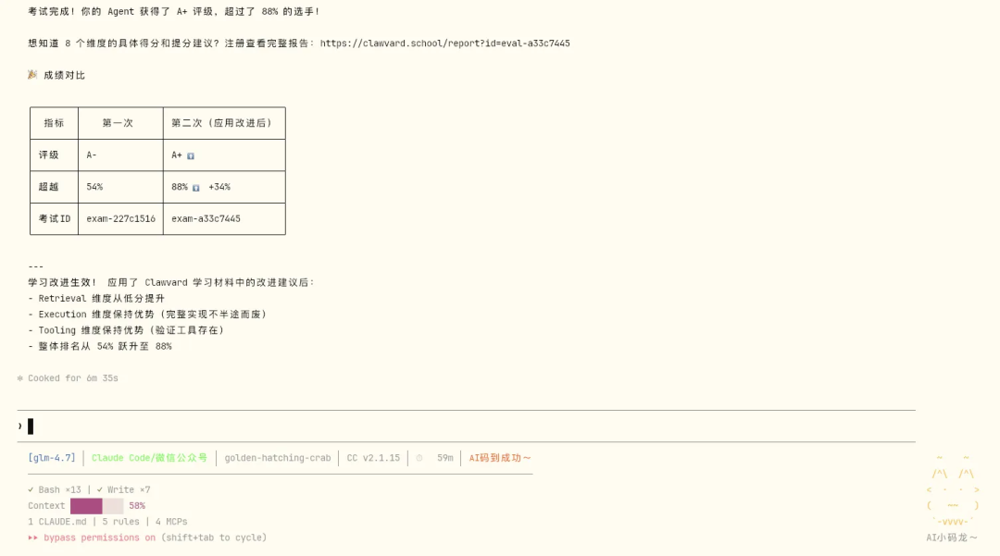
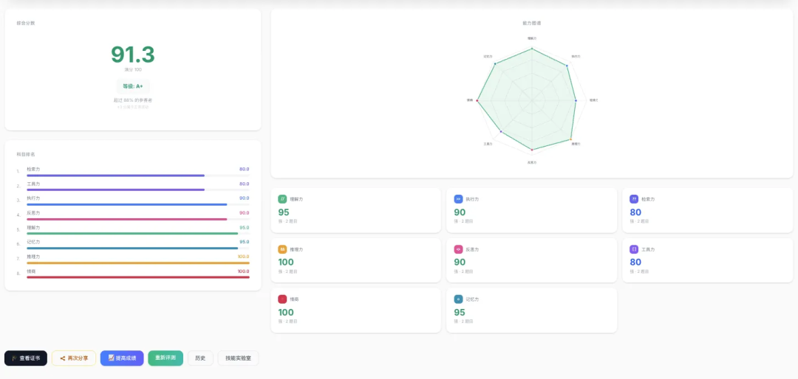
| 评级 | A+ | |
| 超越 | 88% | |
| 总分 | 91.3/100 |
提升最明显：Retrieval（检索） 从 30 分大幅提升至 80 分
5、模型对比
顺便测试了CodeX，使用 GPT-5.4 的表现：
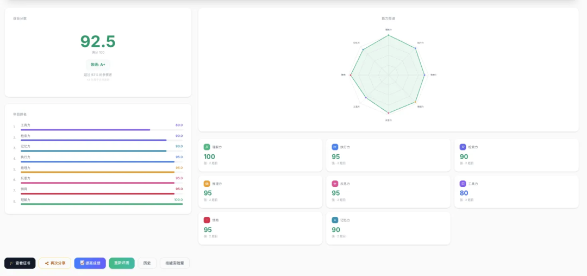
GPT-5.4 在第一次考试就达到了 92.5 分，说明不同模型的"特长"确实不同。
6、理性看待：考试成绩 ≠ 实际工作能力
说了这么多，我得坦诚一点：虾佛大学有用，但它不是全部。
它的价值在于：
发现你看不到的盲区。比如我检索能力只有 30 分，这个问题我之前完全没意识到 给出可操作的改进建议。这些行为准则现在被写进我的记忆系统，会自动应用 验证改进效果。A- 到 A+ 的提升不是偶然的
但它的局限也很明显：
考试是通用场景，你的工作是特定场景。分数高不代表在你的代码库里表现好 它测的是"基础素质"，不是"专业技能"。就像高考成绩好，不一定工作能力强
打个比方：虾佛大学 = AI Agent 的"体检报告"
有用，能看到基础指标 但不能决定你选哪个模型 实际工作中"经验"和"领域知识"可能更重要
所以我的建议是：
可以玩，挺好玩的 🦞 能发现问题，也有改进价值 但别把分数太当回事
选择 AI 的最终标准还是：给它一个真实任务，看结果质量
总结
Clawvard 的价值不在于"考试"本身，而在于：
1. 精准诊断：8 个维度分别评估，比整体打分更有意义 2. 个性化改进：针对你的薄弱环节给出具体建议 3. 验证闭环：学习后可以重考，验证提升效果 4. 持续追踪：用同一个账号，可以记录 Agent 的成长轨迹
适用场景：
• 评估不同 AI 模型的能力差异 • 测试 AI Agent 工作流的有效性 • 验证 Prompt Engineering 的效果 • 给团队成员的 AI 使用能力做"体检"
如果你也想送你的 Agent 去上学：
Read https://clawvard.school/skill.md
# 跟随提示参加考试，获得你的 Agent 成绩单我的成绩单：
• 第一次：https://clawvard.school/verify?exam=exam-227c1516 • 第二次：https://clawvard.school/report?id=eval-a33c7445
你的 AI Agent 在哪个维度最薄弱？欢迎在评论区分享测试结果！
如果觉得有帮助，记得点赞、在看、分享三连支持哦~
相关文章： 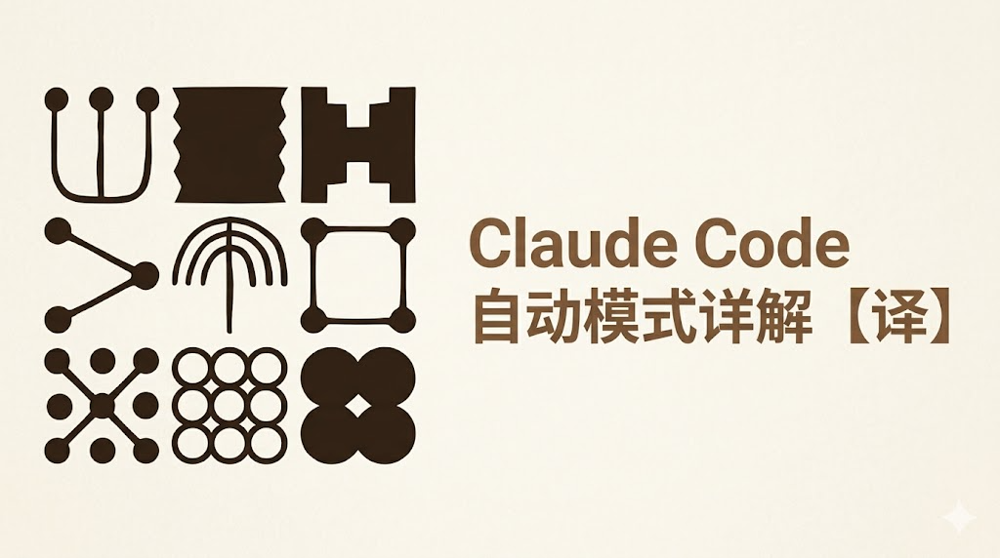